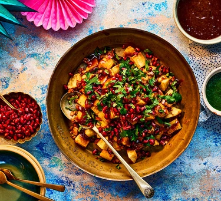

Aaloo Chat

Description
Aloo chaat is a popular Indian street food primarily made from crispy
fried potato cubes flavoured with ground spices and sweet-and-sour
date and tamarind sauce, and finished with coriander leaves and
crunchy pomegranate seeds.
Ingredients
- Potato
- Spices
- Tamarind Sauce
- Coriander Leaves
- Crunchy pomegranate seeds
Steps
- Rinse 3 medium sized potatoes (250 grams) in fresh water and then peel them. Chop the potatoes in small bite sized cubes.
- Heat 4 tablespoons of oil in a frying pan or kadai on a medium heat. Add the potato cubes for frying. Use any neutral flavored with a high smoke point for frying.
- Mix with the oil and begin to fry them. Remember to fry at medium heat.
- When one side becomes golden, turn the potatoes over and fry them on the other side. Keep on turning the potatoes at intervals using a slotted spoon until they are fried evenly.
- Fry until the potatoes are crispy and golden. Make sure the potato cubes are not raw or half-cooked on the inside.
- Fry until the potatoes are crispy and golden. Make sure the potato cubes are not raw or half-cooked on the inside.
- Place fried potato cubes on kitchen paper towels to absorb extra oil. Then, fry the second batch of potatoes if you have used a small or medium-sized wok or pan.
- When the potatoes are still hot take all of them in a mixing bowl
- Then add the ground spice powders.
- Next, add 1 tablespoon of finely chopped mint leaves and 2 tablespoons of finely chopped coriander leaves (cilantro).
- Toss and mix well.
- Then add 1 tablespoon of sweet tamarind chutney. Add less or more to suit your taste. At this step you can add coriander chutney or green chutney if you want.
- Sprinkle 1 to 2 teaspoons of lemon juice for some tang.
- Toss and mix everything very well. The chutney, spice powders and lemon juice should coat the fried potatoes evenly. Taste the potatoes and adjust the seasoning to your taste.
- Add chaat to a serving bowl and serve aloo chaat garnish with pomegranate arils or sev (fried gram flour vermicelli) and serve as an evening snack or starter.